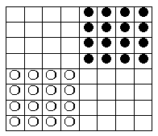

On a chessboard, n white and n black rooks are arranged so that the rooks of different colours cannot capture one another. Find the greatest possible value of n.
Let us prove that for n$>$16 it is impossible to create such an arrangement. Note that on each horizontal and on each vertical, rooks of only one colour can be located (or it may be free of rooks). We agree to designate the horizontal (vertical) the same colour as the colour of rooks standing on it. Since the are more than 16 rooks, there are at least three white horizontals. If there are exactly three white horizontals, then in one of them there are at least 6 white rooks, which means at least six white verticals, and no more than two black ones. This, as shown above, is impossible. So, there are no less than four white horizontals, which means no more than four black horizontals. The same is true for black verticals. Consequently, there are no more than 16 black rooks which shows a contradiction. An example of a possible arrangement for n = 16 is shown in the figure below.

16